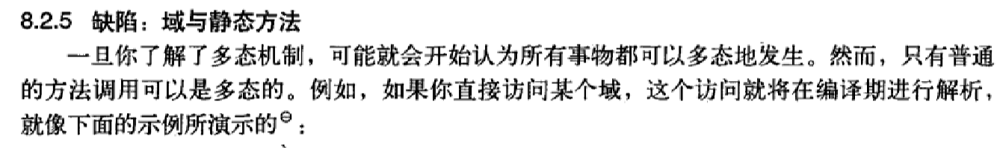

关于 java 域和静态方法不支持多态导致的缺陷
# 问题描述
在 java 编程思想里有这么一句话：

例如代码
1
2
3
4
5
6
7
8
9
10
11
12
13
14
15
16
17
18
19
20
21
| class A1{
int field = 5;
static void print1(){
System.out.println(1);
}
protected int getfield(){return field;}
}
class A2 extends A1{
int field = 1;
static void print2(){
System.out.println(1);
}
@Override
public int getfield(){return field;}
}
public class PolymorphismDrawbacks {
public static void main(String[] args){
A1 a2 = new A2();
System.out.printf("%d,%d\n",a2.field,a2.getfield());
}
}
|
对应输出结果为
虽然类 A2 对 field 有重载的初始化，但是由于 “域不支持多态”，使对域的访问在编译期间已经完成而不是执行期间。故在访问 a2 域时其仍为 A1 类，而重载初始化并未进行。这样很容易和我的理解出现偏差导致逻辑错误
# 解决方案
把所有域设置为 private (高度封装不可继承)
然后如要访问则写一个方法 getValue () 去访问域即可